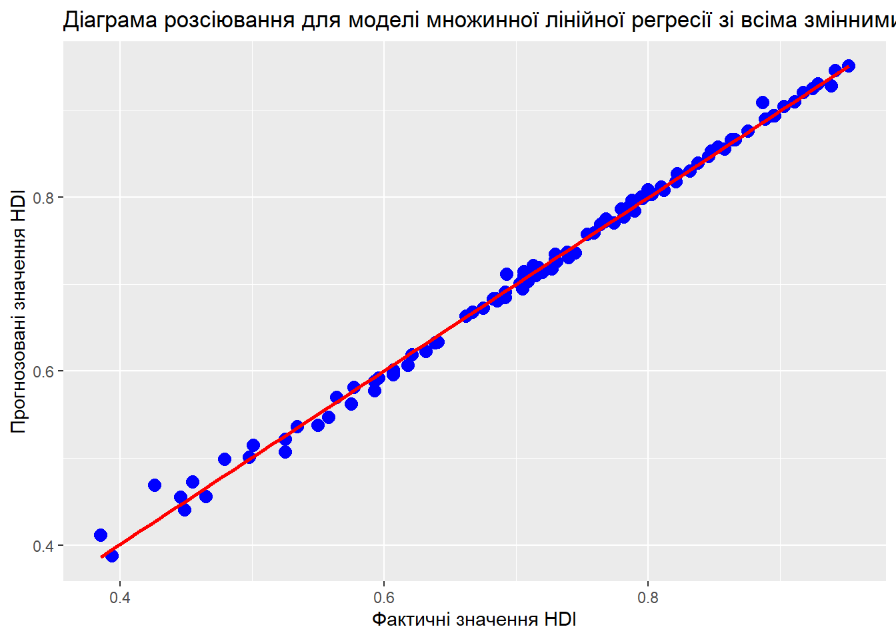

Курсова робота по економетриці на тему: Дослідження впливу різних факторів на рівень людського розвитку в різних країнах
Мета: дослідит вплив різних факторів на рівень людського розвитку, використовуючи мову програмування R та датасет Human Development Index Dataset, знайти та побудувати модель МЛР за методом МНК, що буде найкращою з точки зору прогнозування та інтерпритації, перевірити на гетероскедастичність та прибрати чи зменшити її вплив на точність моделі. Перевірити результат та зробити висновки
Автор
Oleksandr Neschasnij
Дата публікації
May 2, 2023
План
Вступ
Побудова МЛР за МНК. Пошук найкращої МЛР. Перевірка моделі на нульову гіпотезу та наявність статистично значущого взаємозв’язку між змінними;
Перевірка моделі на явність явища гетероскедастичності
Використання моделі для виведення результатів за допомогою симплекс-методу
Пояснення змінних у датасеті
read_file
# A tibble: 191 × 8
Country Human Development In…¹ Life expectancy at b…² Expected years of sc…³
<chr> <dbl> <dbl> <dbl>
1 Switzer… 0.962 84.0 16.5
2 Norway 0.961 83.2 18.2
3 Iceland 0.959 82.7 19.2
4 Hong Ko… 0.952 85.5 17.3
5 Austral… 0.951 84.5 21.1
6 Denmark 0.948 81.4 18.7
7 Sweden 0.947 83.0 19.4
8 Ireland 0.945 82.0 18.9
9 Germany 0.942 80.6 17.0
10 Netherl… 0.941 81.7 18.7
# ℹ 181 more rows
# ℹ abbreviated names: ¹`Human Development Index (HDI)`,
# ²`Life expectancy at birth`, ³`Expected years of schooling`
# ℹ 4 more variables: `Mean years of schooling` <dbl>,
# `Gross national income (GNI) per capita` <dbl>,
# `GNI per capita rank minus HDI rank` <dbl>, `HDI rank` <dbl>
Показник
Коротке пояснення
Human Development Index
Комплексний індекс, який відображає рівень людського розвитку країни за такими показниками, як очікувана тривалість життя, рівень освіти та дохід на душу населення.
Life expectancy at birth
Середня тривалість життя при народженні.
Expected years of schooling
Середня очікувана тривалість навчання в країні на момент народження.
Mean years of schooling
Середня кількість років навчання, отримана усіма людьми, які стали дорослими у країні.
Gross national income (GNI) per capita
Річний дохід на душу населення.
GNI per capita rank minus HDI rank
Індекс, який відображає рівень розриву між доходами населення та їх рівнем людського розвитку у порівнянні з іншими країнами.
HDI rank
Позиція країни у рейтингу HDI.
Побудова МЛР за МНК
У цьому розділі я розповім як створюється ПЛР/МЛР за методом найменших квадратів, які формули використовуються для розрахунку, та як мова програмування R полегшує роботу, проводячи всі розрахунки однією нескладною функцією.
Метод найменших квадратів по кроково
Рівняння прямої виглядає наступним чином:
\[
y_i= \beta_0 + \beta_1x_i + u_i
\]
Підставимо конкретні змінні у рівняння, отримаємо:
\[
HDI_i = \beta_0 + \beta_1GNI_i + u_i
\]
Це рівняння називаються простою лінійною регресією або парною лінійною регресією.
Розглянемо складові рівняння:
\(y\): залежна змінна.
\(\beta_0\): вільний параметр моделі, який відповідає за точку перетину прямої з вістю ординат.
\(\beta_1\): залежний параметр моделі, який відповідає за кут нахилу прямої.
\(x\): незалежна змінна.
\(u\): залишки моделі.
Справа в тому, що в нашому розпорядженні є тільки певна вибірка даних і провести ідеальну пряму через всі точки неможливо. Тому нам необхідно розрахувати оцінки параметрів моделі, які будуть задовільняти нас.
Отже рівняння моделі набуває вигляду: \[
\hat{y_i} = \hat{\beta_0} + \hat{\beta_1}x_i
\] або для нашого прикладу \[
\hat{HDI_i} = \hat{\beta_0} + \hat{\beta_1}GNI_i
\] Для оцінювання параметрів моделі в лінійній регресії пропонується використовувати метод найменших квадратів. Подивимось, як працює мінімізація суми квадратів залишків. \[
\sum\limits^{n}_{i=1}{u_i^2} = \sum\limits^{n}_{i=1}(y_i - \hat{\beta_0} - \hat{\beta_1}x_i)^2 \rightarrow min
\] Візьмемо похідні по \(\hat{\beta_0}\) та \(\hat{\beta_1}\): \[
\left\{\begin{matrix}
-2\sum\limits^{n}_{i=1}(y_i - \hat{\beta_0} - \hat{\beta_1}x_i) = 0 & \\
-2\sum\limits^{n}_{i=1}x_i(y_i - \hat{\beta_0} - \hat{\beta_1}x_i) = 0 &
\end{matrix}\right.
\]
Поділимо перше рівняння на \(n\): \[
\left\{\begin{matrix}
\overline{y} - \hat{\beta_0} - \hat{\beta_1}\overline{x} = 0 & \\
\sum\limits^{n}_{i=1}x_i(y_i - \hat{\beta_0} - \hat{\beta_1}x_i) = 0 &
\end{matrix}\right.
\] З першого рівняння виразимо \(\hat{\beta_0}\) і підставимо у друге: \[
\left\{\begin{matrix}
\hat{\beta_0} = \overline{y} - \hat{\beta_1}\overline{x} & \\
\sum\limits^{n}_{i=1}x_i(y_i - (\overline{y} - \hat{\beta_1}\overline{x}) - \hat{\beta_1}x_i) = 0 &
\end{matrix}\right.
\] Розкриємо дужки у другому рівнянні: \[
\left\{\begin{matrix}
\hat{\beta_0} = \overline{y} - \hat{\beta_1}\overline{x} & \\
\sum\limits^{n}_{i=1}x_i(y_i - \overline{y}) = \hat{\beta_1}\sum\limits^{n}_{i=1}x_i(x_i - \overline{x})
\end{matrix}\right.
\] Оскільки \[\sum\limits^{n}_{i=1}x_i(y_i - \overline{y}) = \sum\limits^{n}_{i=1}(x_i - \overline{x})^2\] та \[\sum\limits^{n}_{i=1}x_i(y_i - \overline{y}) = \sum\limits^{n}_{i=1}(x_i - \overline{x})(y_i - \overline{y}),\] тоді за умови \[
\sum\limits^{n}_{i=1}(x_i - \overline{x})^2 > 0
\] оцінки параметрів моделі \(\hat{\beta_0}\) та \(\hat{\beta_1}\) будуть дорівнювати:
\[
\left\{\begin{matrix}
\hat{\beta_0} = \overline{y} - \hat{\beta_1}\overline{x} & \\
\hat{\beta_1} = \frac{\sum\limits^{n}_{i=1}(x_i - \overline{x})(y_i - \overline{y})}{\sum\limits^{n}_{i=1}(x_i - \overline{x})^2} = \frac{\overline{xy} - \overline{x}\overline{y}}{\overline{x^2} - \overline{x}^2}
\end{matrix}\right.
\] Проте мова програмування R надає нам чудову функцію lm(), яка дозваляє уникнути створення моделі за МНК по кроково, а функція summary() виводить додаткову інформаю про модель, у тому числі оцінку коефіцієнтів
Підготовка вибірки
Для початку потрібно визначити залежну та незалежну змінні, оскільки залежна змінна— пояснювана або прогнозована змінна, то можемо легко сказати, що HDI(Human Development Index)— залежна, а всі інші— незалежні. Тепер потрібно сформувати підвибірку з рівня людського розвитку та всіх інших незалежних змінних за допомогою функції slice_sample(n = …), яка потрібна для отримання зрізу даних випадкової вибірки. Функція select(!с(х, у) використовується для відбору певних даних з стовпців датафрейму, якіне потрібні для дослідження(через їх тип даних)
# A tibble: 100 × 7
`Human Development Index (HDI)` Life expectancy at b…¹ Expected years of sc…²
<dbl> <dbl> <dbl>
1 0.693 61.1 12.3
2 0.498 65.0 9.65
3 0.717 70.3 13.0
4 0.911 78.7 15.7
5 0.853 80.9 12.3
6 0.731 73.8 15.4
7 0.896 81.2 15.6
8 0.832 76.3 15.1
9 0.675 70.7 12.7
10 0.632 63.8 12.0
# ℹ 90 more rows
# ℹ abbreviated names: ¹`Life expectancy at birth`,
# ²`Expected years of schooling`
# ℹ 4 more variables: `Mean years of schooling` <dbl>,
# `Gross national income (GNI) per capita` <dbl>,
# `GNI per capita rank minus HDI rank` <dbl>, `HDI rank` <dbl>
Пошук найкращої МЛР
(Множинна лінійна регресія) - це статистична методика, що дозволяє встановити залежність між залежною змінною та двома або більше незалежними змінними.
Модель зі всіма змінними
Розглянемо залежність між HDI(залежна зміна) та всіма незалежними
MLR_lm <-lm(`Human Development Index (HDI)`~ ., data = MLR) summary(MLR_lm)
Call:
lm(formula = `Human Development Index (HDI)` ~ ., data = MLR)
Residuals:
Min 1Q Median 3Q Max
-0.042874 -0.003368 0.000509 0.005200 0.017706
Coefficients:
Estimate Std. Error t value Pr(>|t|)
(Intercept) 9.922e-02 4.767e-02 2.081 0.04014
`Life expectancy at birth` 6.138e-03 3.364e-04 18.249 < 2e-16
`Expected years of schooling` 1.091e-02 9.150e-04 11.922 < 2e-16
`Mean years of schooling` 1.421e-02 8.663e-04 16.407 < 2e-16
`Gross national income (GNI) per capita` -3.693e-07 1.291e-07 -2.861 0.00522
`GNI per capita rank minus HDI rank` -1.368e-03 9.550e-05 -14.323 < 2e-16
`HDI rank` -8.799e-04 1.195e-04 -7.363 7.09e-11
(Intercept) *
`Life expectancy at birth` ***
`Expected years of schooling` ***
`Mean years of schooling` ***
`Gross national income (GNI) per capita` **
`GNI per capita rank minus HDI rank` ***
`HDI rank` ***
---
Signif. codes: 0 '***' 0.001 '**' 0.01 '*' 0.05 '.' 0.1 ' ' 1
Residual standard error: 0.009076 on 93 degrees of freedom
Multiple R-squared: 0.9959, Adjusted R-squared: 0.9956
F-statistic: 3737 on 6 and 93 DF, p-value: < 2.2e-16
ggplot(data = MLR, aes(x =`Human Development Index (HDI)`, y =predict(MLR_lm))) +geom_point(shape =20, colour ="blue", size=5) +geom_smooth(method ="lm", se =FALSE, color ="red") +labs(x ="Фактичні значення HDI", y ="Прогнозовані значення HDI", title ="Діаграма розсіювання для моделі множинної лінійної регресії зі всіма змінними")
`geom_smooth()` using formula = 'y ~ x'

Тепер детальніше про функцію summary(), окрім оцінки коефіцієнтів, вона виводить стандартну похибку, t-критерій, коефіцієнт детермінації та скоригований коефіцієнт детермінації, ступені свободи, F-критерій, p-значення і мінімальні та максимальні відхилиння.
Поговоримо про кожен окремо на прикладі моделі MLR_lm:
t-критерій— тест, який використовується у статистиці для перевірки гіпотез про значимість різниці між середніми значеннями двох груп. T-критерій базується на розподілі Стьюдента, що залежить від ступенів свободи (degrees of freedom) і рівня значимості
Для початку застосовуємо функцію qt(), що повертає критичне значення (квантиль) t-розподілу.
abs(qt(0.01, 93))
[1] 2.367115
Робимо висновок, що усі коефіцієнти, крім Intercept, мають значення t-критерію, модуль якого більший за 2.367115, що дозволяє прийняти гіпотезу про їхню значущість;
F-критерій— це статистичний критерій, що використовується для порівняння дисперсії між двома або більше вибірками. В контексті лінійної регресії F-критерій використовується для оцінки важливості регресійної моделі в цілому. Значення f-статистики досить високе (3737), що підтверджує наявність статистично значущого взаємозв’язку між змінними;
p-значення— це ймовірність отримати спостережуване значення статистики, якщо нульова гіпотеза є правильною. Значення p-value дуже мале p-value: < 2.2e-16, що свідчить про те, що наявний статистично значущий взаємозв’язок між змінними в моделі;
Коефіцієнт детермінації — коефіцієнт, що вказує на частину варіації залежної змінної , що пояснюється регресійною моделлю. Але у цього показника є один вагомий мінус— чим більша к-сть вибірок та змінних, тим більший буде R-squared. Проте і цей недолік враховує функція summary(), Adjusted R-squared або скорегований коефіцієнт детермінації, що є модифікованою версією , але й він не дає 100% гарантії, щодо правдивості показників, тому повністю довіряти цим показникам, не перевіршив статистичну значущість змінних, навіть якщо R^2= 99%— не варто;
Довірчі інтервали— це інтервал значень, що містить обраний параметр з певною ймовірністю.
confint(MLR_lm)
2.5 % 97.5 %
(Intercept) 4.560783e-03 1.938718e-01
`Life expectancy at birth` 5.470241e-03 6.806099e-03
`Expected years of schooling` 9.091301e-03 1.272515e-02
`Mean years of schooling` 1.249374e-02 1.593454e-02
`Gross national income (GNI) per capita` -6.257422e-07 -1.129485e-07
`GNI per capita rank minus HDI rank` -1.557558e-03 -1.178263e-03
`HDI rank` -1.117211e-03 -6.425941e-04
Загалом, з рівнем довіри 95%, ми бачимо, що більшість коефіцієнтів, крім Gross national income (GNI) per capita, GNI per capita rank minus HDI rank мають довірчі інтервали, які містять нуль, що свідчить про те, що ці коефіцієнт можуть не мати значимого впливу на залежну змінну при розгляді інших незалежних змінних.
Висновок: проаналізувавши отримані дані, модель зі всіма змінними є чудовою з точки зору прогнозування, але, врахувавши результати довірчого інтервалу, дізнаємось, що є змінні, що не мають статистично-значущого впливу на залежну змінну, тому спробуємо зменшити кількість атрибутів
Модель з використанням декількох змінних
set.seed(2023)MLR <- read_file %>%select(!c(Country)) %>%slice_sample(n =100)MLR_lm_1 <-lm(`Human Development Index (HDI)`~`Life expectancy at birth`+`Expected years of schooling`+`Mean years of schooling`+`HDI rank` , data = MLR) summary(MLR_lm_1)
Call:
lm(formula = `Human Development Index (HDI)` ~ `Life expectancy at birth` +
`Expected years of schooling` + `Mean years of schooling` +
`HDI rank`, data = MLR)
Residuals:
Min 1Q Median 3Q Max
-0.054557 -0.007629 0.000371 0.008960 0.044198
Coefficients:
Estimate Std. Error t value Pr(>|t|)
(Intercept) 0.4673941 0.0570668 8.190 1.19e-12 ***
`Life expectancy at birth` 0.0035063 0.0004839 7.245 1.13e-10 ***
`Expected years of schooling` 0.0057615 0.0013108 4.395 2.88e-05 ***
`Mean years of schooling` 0.0085275 0.0011826 7.211 1.33e-10 ***
`HDI rank` -0.0015778 0.0001277 -12.359 < 2e-16 ***
---
Signif. codes: 0 '***' 0.001 '**' 0.01 '*' 0.05 '.' 0.1 ' ' 1
Residual standard error: 0.01608 on 95 degrees of freedom
Multiple R-squared: 0.9868, Adjusted R-squared: 0.9862
F-statistic: 1770 on 4 and 95 DF, p-value: < 2.2e-16
ggplot(data = MLR, aes(x =`Human Development Index (HDI)`, y =predict(MLR_lm_1))) +geom_point(shape =20, colour ="blue", size=5) +geom_smooth(method ="lm", se =FALSE, color ="red") +labs(x ="Фактичні значення HDI", y ="Прогнозовані значення HDI", title ="Діаграма розсіювання для моделі множинної лінійної регресії")
`geom_smooth()` using formula = 'y ~ x'
t-критерій—
abs(qt(0.02, 95))
[1] 2.082331
Робимо висновок, що усі коефіцієнти мають значення t-критерію, модуль якого більший за 2.08, що дозволяє прийняти гіпотезу про їхню значущість;
F-критерій—. Значення f-статистики дотатньо високе (1770), що підтверджує наявність статистично значущого взаємозв’язку між змінними;
p-значення— це ймовірність отримати спостережуване значення статистики, якщо нульова гіпотеза є правильною. Значення p-value дуже мале p-value: < 2.2e-16, що свідчить про те, що наявний статистично значущий взаємозв’язок між змінними в моделі;
Коефіцієнт детермінації —. В даній моделі скорегований коефіцієнт детермінації дорівнює 98,6%
Довірчі інтервали—
confint(MLR_lm_1)
2.5 % 97.5 %
(Intercept) 0.354102222 0.580685953
`Life expectancy at birth` 0.002545571 0.004467009
`Expected years of schooling` 0.003159129 0.008363860
`Mean years of schooling` 0.006179691 0.010875299
`HDI rank` -0.001831241 -0.001324349
У таблиці немає довірчих інтервалів 95%, що містять нуль, отже всі коефіцієнти є статистично значущими на рівні значущості 0,05
Висновок: Отже, дана модель є кращою для майбутніх досліджень з точки зору інтерпритації та чудовою з точки зору прогнозування, але судячи з графіку— краще використовувати 1-у модель, то який вибір слід зробити? На допомогу приходить дослідження явища гетероскедастичності
Перевірка моделі на явність явища гетероскедастичності
Гетероскедастичність— це випадкові величини, що мають різну дисперсію. Головна проблема заключається в тому, що це явище зміщує стандартні помилки оцінок моделі та вони будуть неточними ## Перевірка графічно Візуаізуємо відхилення для перевірки на гетероскедастичність для моделі з МЛР зі всіма змінними
residuals_df <-data.frame(fitted = MLR_lm$fitted.values, residual = MLR_lm$residuals)ggplot(residuals_df, aes(x = fitted, y = residual)) +geom_point(alpha =0.7, color ="red") +labs(x ="Прогнозовані значення ціни на житло", y ="Залишки моделі") +theme_bw()
Візуаізуємо відхилення для перевірки на гетероскедастичність для моделі з МЛР з 3-ма змінними
residuals_df <-data.frame(fitted = MLR_lm_1$fitted.values, residual = MLR_lm_1$residuals)ggplot(residuals_df, aes(x = fitted, y = residual)) +geom_point(alpha =0.7, color ="blue") +labs(x ="Прогнозовані значення рівня людського розвитку", y ="Залишки моделі") +theme_bw()
Проведення тестів на явище гетероскедастичності
Існує декілька методів перевірки цього явища, зупинемось на двох тестах: тест Уайта та тест Гольфельда-Квандта
Тест Уайта:
Щоб порахувати LM статистику для тесту, слід перемножити значення R^2 і розмір вибірки. Ця статистика розподілена згідно з хі-квадрат розподілом зі ступенями свободи, що дорівнюють числу оцінюваних параметрів (в допоміжній регресії) мінус один. 1) Тест для 1-ої моделі з усіма змінними:
MLR_lm_white <-white(MLR_lm)MLR_lm_white
# A tibble: 1 × 5
statistic p.value parameter method alternative
<dbl> <dbl> <dbl> <chr> <chr>
1 28.9 0.00403 12 White's Test greater
Тест для 2-ої моделі з усіма змінними:
MLR_lm_1_white <-white(MLR_lm_1)MLR_lm_1_white
# A tibble: 1 × 5
statistic p.value parameter method alternative
<dbl> <dbl> <dbl> <chr> <chr>
1 29.7 0.000236 8 White's Test greater
cat("p-value що в першій моделі",MLR_lm_white$p.value, ",що в другій", MLR_lm_1_white$p.value, "менші за 0,05, що відхиляє 0 гіпотезу про однорідність дисперсій")
p-value що в першій моделі 0.004032964 ,що в другій 0.0002359707 менші за 0,05, що відхиляє 0 гіпотезу про однорідність дисперсій